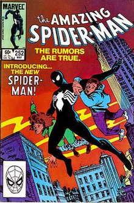
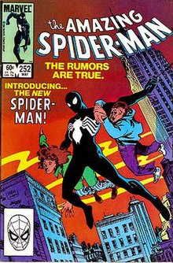
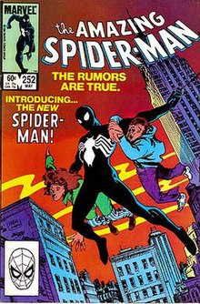

SpiderMan is a superHero appearing in american Marvel Comicbooks published by Marvel Comics Created by writter-editor Stan Lee and artist Steve Ditko, he first appeared in the anthology Comicbooks Amazing Fantasy #15(August 1962) in the Silver Age of Comicbooks. He has been featured in comic books, television shows, films, videogames, novels, and plays.
In 1962, with the success of the Fantastic Four, Marvel Comics editor and head writer Stan Lee was casting for a new superhero idea. He said the idea for Spider-Man arose from a surge in teenage demand for comic books and the desire to create a character with whom teens could identify.[15]: 1 As with Fantastic Four, Lee saw Spider-Man as an opportunity to "get out of his system" what he felt was missing in comic books.[16] In his autobiography, Lee cites the non-superhuman pulp magazine crime fighter the Spider as a great influence,[14]:[130][17] and in a multitude of print and video interviews, Lee stated he was inspired by seeing a spider climb up a wall—adding in his autobiography that he has told that story so often he has become unsure of whether or not this is true.[note 1] Besides the name, the Spider was wanted by both the law and the criminal underworld (a defining theme of Spider-Man's early years) and had through years of ceaseless struggle developed a "sixth sense", which warns him of danger, the inspiration for Spider-Man's "spider sense".[17] Although at the time teenage superheroes were usually given names ending with "boy", Lee says he chose "Spider-Man" because he wanted the character to age as the series progressed, and felt the name "Spider-Boy" would have made the character sound inferior to other superheroes.
